What about \frac{\lambda}{2}(\partial_x h)^2? Who ordered that?
The Nonlinear Term
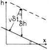
Adding material at rate v to the surface causes it to rise by
\displaystyle
v\delta t\sqrt{1+(\partial_x h)^2}
in time \delta t
Experiment
Turbulent liquid crystals. Takeuchi & Sano, 2010
Other Systems
KPZ used to describe bacterial colony growth, flame propagation, etc.
The physics of each situation seems different.
What do we mean to say that each is described by KPZ?
Statistical Physics
The Big Idea
How do we understand macroscopic matter in terms of microscopic constituents?
Talking about a uniform state of matter requires that widely separated regions are nearly independent.
Living matter is quite different in this respect.
A Phase Diagram
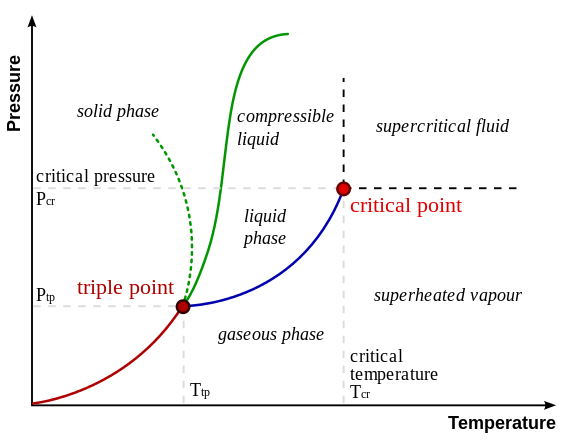
Critical Point
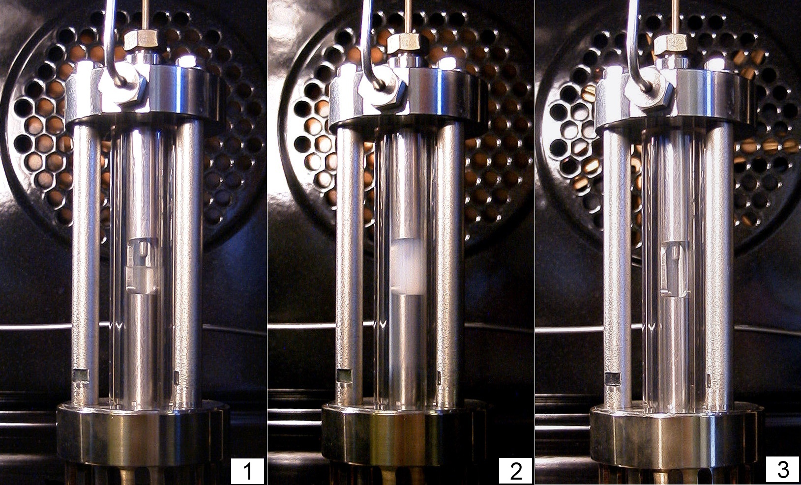
Lattice Gas
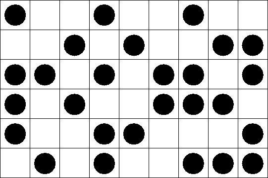
Ising Model
\displaystyle
H = -J\sum_{\langle j\,k\rangle} \sigma_j \sigma_k + h \sum_j \sigma_j,\qquad \sigma_j = \pm 1
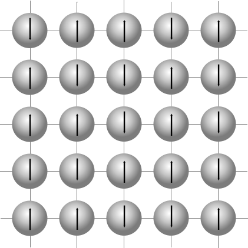
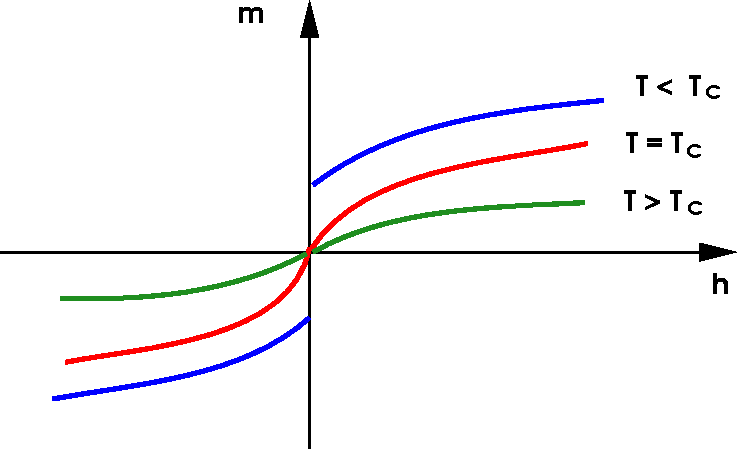
At Critical Point
System is scale invariant (a fractal).
Correlation function is power law \displaystyle
\langle \sigma(\mathbf{x})\sigma(\mathbf{y})\rangle = \frac{1}{|\mathbf{x}-\mathbf{y}|^\eta}, \qquad |\mathbf{x}-\mathbf{y}| \to \infty
\eta is a critical exponent
Exact solution in 2D: \eta=1/4.
No exact solution in 3D.
Universality
Ising model is clearly ridiculously oversimplified.
Why don’t we study more complicated models?
Near the critical point, the physics is the same!
More precisely, critical exponents coincide.
Random Walk
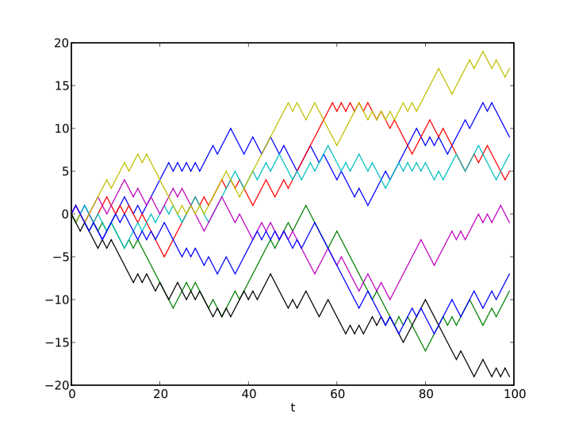
Heat Equation
\displaystyle
\frac{\partial \phi}{\partial t} = D \frac{\partial^2 \phi}{\partial x^2}
Polymer is stretched out in (1,1) direction, but attracted to points.
Wants to maximize number visited, subject to moving up and to the right.
This is the directed polymer in a random potential. It’s equivalent to KPZ!
Wandering
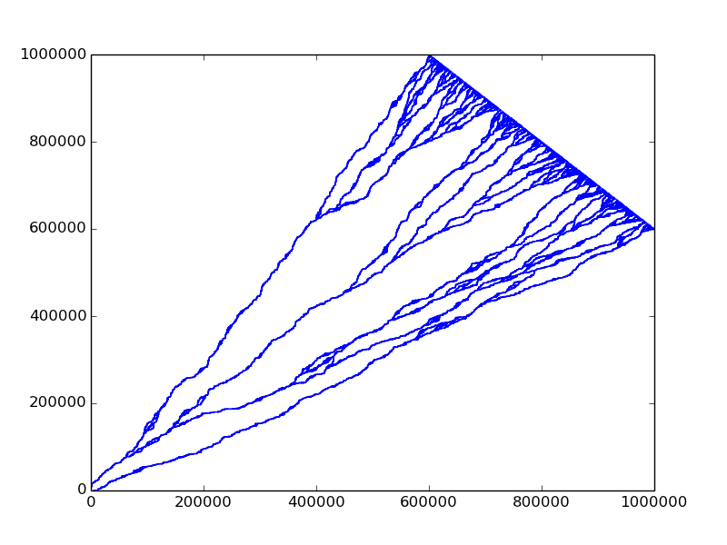
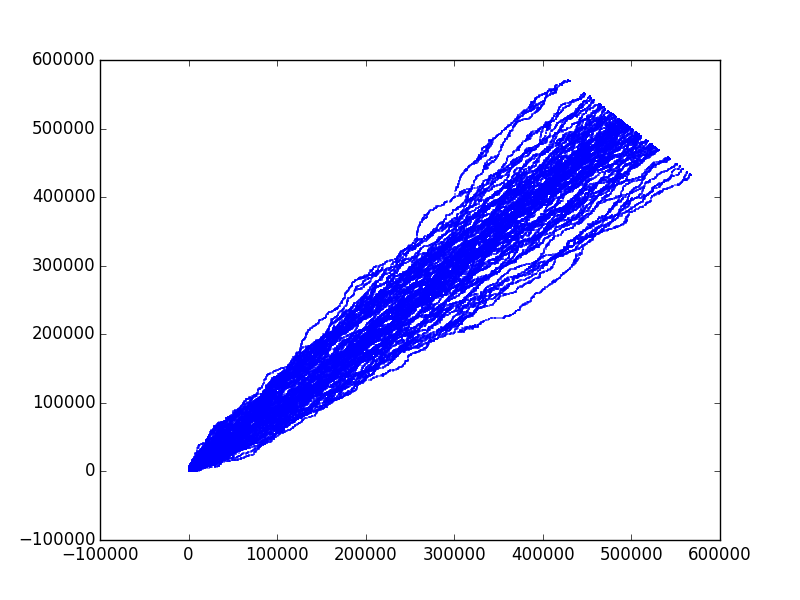
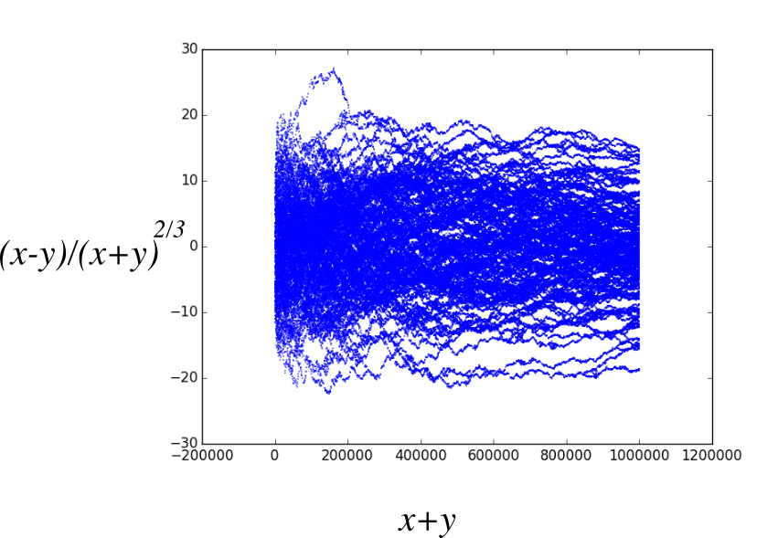
Remember T \sim L^z. Here T = x+y, L=x-y, so z=3/2
Geodesics
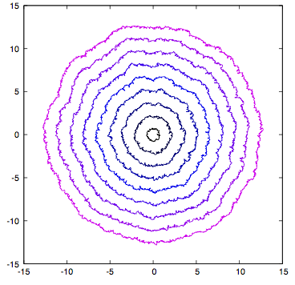
Model for propagation of light in random refractive index, or fluctuating spacetime geometry.
Solving the KPZ Equation
Can We Solve KPZ?
This means: calculate the statistical properties exactly
Nope
Actually, it’s a struggle to define it!
Martin Hairer won the Fields medal in 2014 for giving precise meaning to the KPZ equation.
Thus we resort to models. If we believe that scaling behaviour is insensitive to details of system, we are free to choose!
Such models have played a vital role in our understanding of critical phenomena.
Back to directed polymer
Permutation (23154)
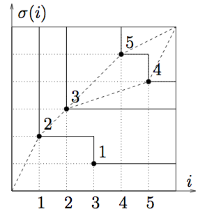
Longest increasting subsequences are (2,3,5) and (2,3,4).
The fluctuations of height of a KPZ surface, or of the energy of a random polymer, are equivalent to the statistics of the longest increasing subsequence of a random permutation!
Statistical physics reduced to combinatorics.
Effect of Geometry
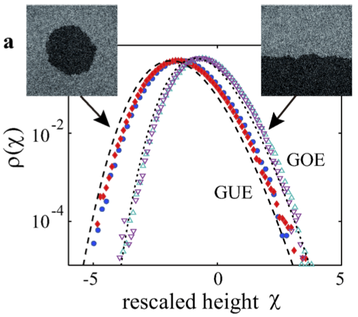
Exact solution describe different probability distributions.
Same h(x,t) - vt \sim t^{1/3} scaling.
What Don’t We Know?
Almost anything about higher dimensions (e.g. growth on a 2D interface). Critical exponents and scaling functions.
A rough-to-smooth phase transition?
Any generalization of the ‘tricks’ (e.g. random permutation) used in 1D.